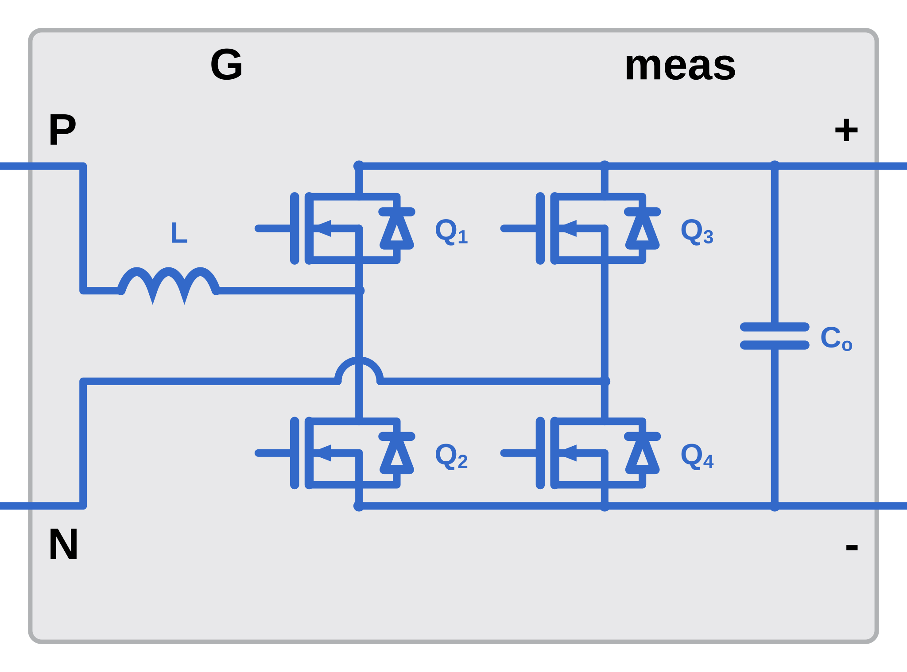
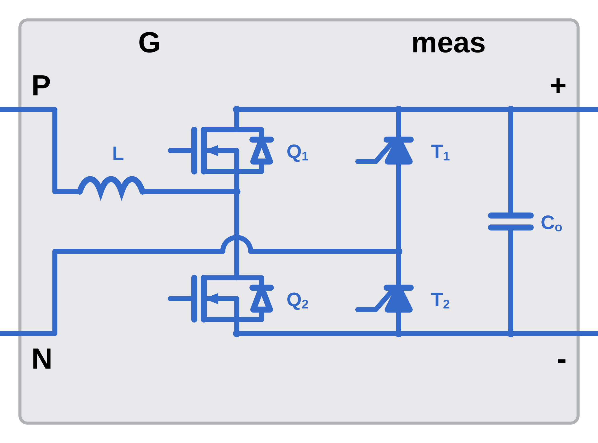

Bridgeless totem-pole boost PFC power stage with a fast and a slow leg
The Totem-Pole Boost PFC block models a bridgeless power factor correction power stage: two half-bridge legs across the DC bus with the boost inductor in the AC line, and no input diode bridge. A four-element gate vector drives both legs.
The circuit contains:
slowLegDeviceOption.The block icon follows the slow leg selection: TotemPoleDiodeIcon.svg,
TotemPoleMOSFETIcon.svg or TotemPoleThyristorIcon.svg.


| Port | Description |
|---|---|
| P | AC line terminal, through the boost inductor. |
| N | AC neutral terminal, at the slow leg midpoint. |
| + | Positive DC output terminal. |
| - | Negative DC output terminal. |
| Port | Size | Description |
|---|---|---|
| G | 4 | Gate vector for both legs. Four elements in every model option and for every slow leg device. |
| Element | Drives | Role |
|---|---|---|
G(1) | Fast leg high-side device | Switching frequency. |
G(2) | Fast leg low-side device | Switching frequency. |
G(3) | Slow leg high-side device | Line frequency. MOSFET and Thyristor slow legs only. |
G(4) | Slow leg low-side device | Line frequency. MOSFET and Thyristor slow legs only. |
slowLegDeviceOption set to Diode, elements 3 and 4 are terminated inside the
block and have no effect. Supply a four-element signal in all cases.
| Port | Size | Description |
|---|---|---|
| meas | bus, 4 elements | Measurement bus. |
| Element | Bus element | Measurement |
|---|---|---|
| 1 | IL [A] | Boost inductor current, which is the line current. |
| 2 | Vout [V] | DC output voltage. |
| 3 | Vin [V] | AC input voltage. |
| 4 | Iout [A] | DC output current. |
Iin element. The boost inductor is
in series with the AC line, so IL is the line current.
| Option | Circuit used |
|---|---|
| Simplified | Flat circuit with four Ideal Semiconductor Switch blocks. The leg dropdowns are hidden and the mask edit fields parameterize every device. |
| Detailed | Variant subsystems for the fast leg and the slow leg, each with its own device dropdown. |
fastLegDeviceOption | Configured through |
|---|---|
| Ideal Switch | Mask edit fields RdsOnFast and its neighbors. |
| MOSFET (Ideal, Switching) with Thermal | Set one device on its own dialog, then use Apply Fast MOSFET Params. |
slowLegDeviceOption selects the device family; two of the three families have a
second dropdown for fidelity.
slowLegDeviceOption | Second dropdown | Configured through |
|---|---|---|
| Diode | slowDiodeDeviceOption: Ideal Diode, Tabulated Diode | Mask edit fields for the ideal diode; the device dialog and Apply Slow Diode Params for the tabulated diode. |
| MOSFET | slowMOSFETDeviceOption: Ideal Switch, MOSFET (Ideal, Switching) with Thermal | Mask edit fields for the ideal switch; the device dialog and Apply Slow MOSFET Params for the MOSFET. |
| Thyristor | None | Mask edit fields, including the holding current IhSlow. |
The tables below list every mask parameter, including the ones hidden by the current dropdown selections. The Shown when column gives the selections that reveal each one.
| Parameter | Prompt | Default | Shown when |
|---|---|---|---|
modelOption | Totem-Pole Boost PFC Model Option | Simplified (default) | Detailed | Always |
ratedPower | Rated Power | 3000 W | Always |
VIn | AC Input Voltage (RMS) | 230 V | Always |
FRated | Line Frequency | 50 Hz | Always |
VOut | DC Output Voltage | 400 V | Always |
Fsw | Switching Frequency | 100000 Hz | Always |
LBoost | Boost Inductance | 2.0742e-4 H | Always |
RLboost | Inductor resistance | 0.02 Ohm | Always |
CBoost | Output Capacitance | 1.1937e-3 F | Always |
Rco | Capacitor ESR | 0.01 Ohm | Always |
Vco | Initial Output Capacitor Voltage | 400 V | Always |
| Parameter | Prompt | Default | Shown when |
|---|---|---|---|
fastLegDeviceOption | Fast Leg Device | Ideal Switch | MOSFET (Ideal, Switching) with Thermal (default) | modelOption = Detailed |
RdsOnFast | On-State Resistance | 0.04 Ohm | fastLegDeviceOption = Ideal Switchor modelOption = Simplified |
GdsOffFast | Off-State Conductance | 1e-5 1/Ohm | fastLegDeviceOption = Ideal Switchor modelOption = Simplified |
VthFast | Threshold Voltage | 3 V | fastLegDeviceOption = Ideal Switchor modelOption = Simplified |
simTempFast | Simulation temperature | 25 degC | modelOption = Detailed and fastLegDeviceOption = MOSFET (Ideal, Switching) with Thermal |
VfFast | Forward Voltage (Body Diode) | 0.8 V | fastLegDeviceOption = Ideal Switchor modelOption = Simplified |
RdFast | On Resistance (Body Diode) | 0.001 Ohm | fastLegDeviceOption = Ideal Switchor modelOption = Simplified |
GdFast | Off Conductance (Body Diode) | 1e-5 1/Ohm | fastLegDeviceOption = Ideal Switchor modelOption = Simplified |
| Parameter | Prompt | Default | Shown when |
|---|---|---|---|
slowLegDeviceOption | Slow Leg Device | Diode | MOSFET (default) | Thyristor | modelOption = Detailed |
slowMOSFETDeviceOption | MOSFET Device | Ideal Switch | MOSFET (Ideal, Switching) with Thermal (default) | modelOption = Detailed and slowLegDeviceOption = MOSFET |
slowDiodeDeviceOption | Diode Device | Ideal Diode (default) | Tabulated Diode | modelOption = Detailed and slowLegDeviceOption = Diode |
RdsOnSlow | On-State Resistance (MOSFET) | 0.05 Ohm | modelOption = Simplifiedor slowLegDeviceOption = MOSFET and slowMOSFETDeviceOption = Ideal Switch |
GdsOffSlow | Off-State Conductance | 1e-5 1/Ohm | modelOption = Simplifiedor slowLegDeviceOption = MOSFET and slowMOSFETDeviceOption = Ideal Switch |
VthSlow | Threshold Voltage | 3 V | modelOption = Simplifiedor slowLegDeviceOption = MOSFET and slowMOSFETDeviceOption = Ideal Switchor slowLegDeviceOption = Thyristor |
simTempSlow | Simulation temperature | 25 degC | modelOption = Detailed, and any of:slowLegDeviceOption = Diode and slowDiodeDeviceOption = Tabulated DiodeslowLegDeviceOption = MOSFET and slowMOSFETDeviceOption = MOSFET (Ideal, Switching) with Thermal |
VfSlow | Forward Voltage (Diode) | 0.6 V | modelOption = Detailed, and any of:slowLegDeviceOption = Diode and slowDiodeDeviceOption = Ideal DiodeslowLegDeviceOption = Thyristor |
RdSlow | On Resistance (Diode) | 0.01 Ohm | modelOption = Detailed, and any of:slowLegDeviceOption = Diode and slowDiodeDeviceOption = Ideal DiodeslowLegDeviceOption = Thyristor |
GdSlow | Off Conductance (Diode) | 1e-8 1/Ohm | modelOption = Detailed, and any of:slowLegDeviceOption = Diode and slowDiodeDeviceOption = Ideal DiodeslowLegDeviceOption = Thyristor |
IhSlow | Holding current (Ih) | 1 A | modelOption = Detailed and slowLegDeviceOption = Thyristor |
The Export to Unmasked Subsystem button writes the Totem-Pole Boost PFC circuit to a new model with no mask, alongside a parameter file that reproduces every mask value. Use it to inspect or edit the circuit beyond what the mask exposes.
| File written to the current folder | Contents |
|---|---|
TotemPoleBoostPFC_exported_<timestamp>.slx | The unmasked circuit. Its PreLoadFcn runs the parameter file. |
TotemPoleBoostPFC_exported_<timestamp>_params.m | Assigns the structure TotemPoleBoostPFC in the base workspace. Every block parameter of the exported model references a field of this structure. |
The Totem-Pole Boost PFC block has an open-loop test harness,
TotemPoleBoostPFCTestHarnessPlant.slx, in the test folder of TotemPoleBoostPFCPlant. The harness holds this
block, the PWM generator blocks that drive its gate port, the input source, the load and a scope on
the measurement bus. It carries no controller: constant reference blocks set the operating point, so
the harness exercises the power stage on its own.
| Block | Role in the harness |
|---|---|
Totem-Pole Boost PFC | This block, taken from ConverterPlantLibrary, with slowLegDeviceOption set to MOSFET and both MOSFET dropdowns set to MOSFET (Ideal, Switching) with Thermal, so that all four positions are MOSFETs. |
Fast Leg PWM Generator | Half Bridge PWM Generator from ConverterLibrary. Switching frequency from totemPoleDesign, dead time totemPoleController.fastLegDeadTime. |
Slow Leg PWM Generator | Complementary PWM Generator from ConverterLibrary, turn-on delay totemPoleController.slowLegTurnOnDelay and logic threshold 0, so the slow leg follows the sign of the line voltage. |
Line Voltage Select, Line Voltage Delay | Vin [V] off the measurement bus, delayed one major step by a Memory block. The slow leg gate is derived from a plant measurement, so the delay is what keeps the gate path out of an algebraic loop. |
Duty Scale, Duty Offset, Duty Limit | Feedforward fast-leg duty 1 - |Vin|/totemPoleDesign.outputVoltage, saturated to totemPoleController.dutyMin and dutyMax. |
Fast Leg Gate Order, Slow Leg Gate Order | Selectors placing the commanded duty on the fast-leg low-side switch and the line polarity on the slow-leg low-side switch, which are the active devices for a positive line half cycle. |
Positive Half Gates, Negative Half Gates, Line Polarity | The four gates in the order the G port takes them, and the Switch that exchanges the two fast-leg elements on the negative line half cycle, where the two fast-leg switches exchange roles. |
Vac, Rload | AC voltage source of amplitude VacAmp at Fline, and the load resistance Rload_R, both from the defaults script. |
Bus Selector, Scope | Vin [V], IL [A], Iout [A] and Vout [V] off the measurement bus. |
Opening the harness runs TotemPoleBoostPFCDefaultInputParameters through its PreLoadFcn, so every
design and controller structure the generator masks read is in the base workspace before the first
simulation. The solver is ode23t, as in the converter model the harness was taken
from.
The stop time is 2/totemPoleDesign.lineFrequency.value, two cycles of the 50 Hz line.
Boost PFC | Interleaved Boost PFC | Non-Isolated DC-DC | Totem-Pole Boost PFC Controller